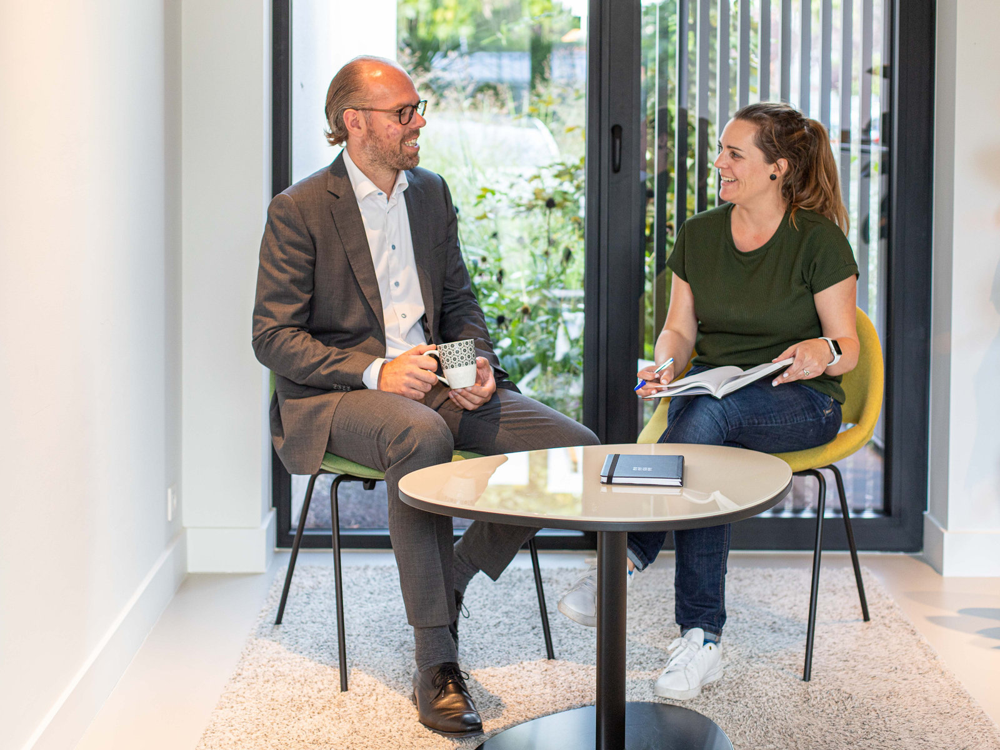
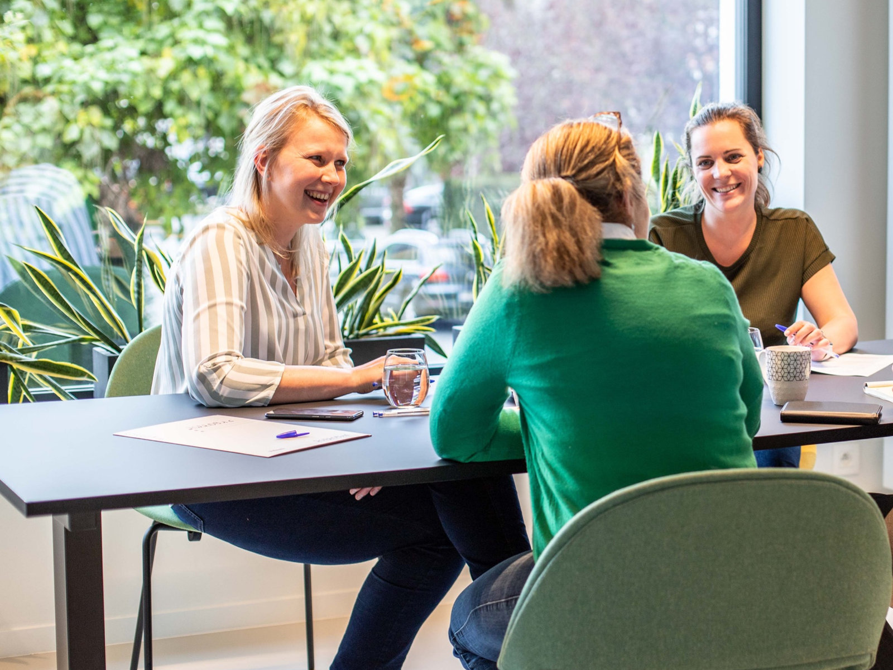

Advocatenkantoor · Aartselaar
Een frisse kijk
op de zaak.
Wij staan ondernemingen en particulieren bij in insolventie, invordering, burgerlijk recht en familierecht. Met heldere afspraken, snelle communicatie en een aanpak die op de zaak zelf gericht blijft.

- 2013
- Curator ondernemingsrechtbank Antwerpen
- 2016 · 2022
- Ook afdeling Mechelen en Turnhout
- Peer Reviewed
- Kwaliteitslabel Orde van Advocaten
- Collaboratief
- Geaccrediteerd collaboratief advocaat
Over het kantoor
Rechtsbijstand zonder
omhaal van woorden.
Jacobs Law is een advocatenkantoor in Aartselaar, net onder Antwerpen. Klein genoeg dat u telkens dezelfde advocaat aan de lijn krijgt, en gespecialiseerd genoeg om u in insolventie en familierecht echt vooruit te helpen.
Wij nemen dossiers aan waarvan wij menen dat we er het verschil in kunnen maken. Kunnen wij u niet helpen, dan zeggen we dat en verwijzen we u door naar een collega die dat wel kan. Dat is voor iedereen de kortste weg.
Goede afspraken, een duidelijke en snelle communicatie evenals een doelgerichte aanpak. Dat is wat je van mij mag verwachten.
Mr. Liesbet Jacobs

Waarom cliënten hier terechtkomen
Een dossier is pas goed behandeld als u begrijpt wat er gebeurt.
- Eén vast aanspreekpunt. U hoeft uw verhaal niet elke keer opnieuw te doen.
- Vooraf gekende kosten. Het eerste consult is een vaste prijs; daarna weet u waar u aan toe bent.
- Minnelijk waar het kan. Een regeling die standhoudt is doorgaans meer waard dan een vonnis.
- Procederen waar het moet. En dan grondig voorbereid.
Juridische domeinen
Waarin dit kantoor thuis is.
Faillissementen & insolventie
Curatele, nakende staking van betaling en begeleiding van ondernemers in moeilijkheden.
02Schulden & invordering
Onbetaalde facturen innen, betalingsregelingen uitwerken en schuldposities beheersbaar maken.
03Burgerlijk recht
Huurrecht, contracten, betwiste facturen en de alledaagse geschillen die daaruit voortkomen.
04Familierecht
Echtscheiding, onderhoudsgeld, omgangsrecht en vereffening-verdeling — met de nodige omzichtigheid.
Insolventie & curatele
Wij kennen het faillissement
van beide kanten.
Sinds 2013 staat mr. Jacobs op de lijst van curatoren bij de ondernemingsrechtbank te Antwerpen, sinds 2016 ook te Mechelen en sinds 2022 te Turnhout. Dat is een zeldzaam vertrekpunt: wie faillissementen afwikkelt in opdracht van de rechtbank, weet als geen ander wat een ondernemer vooraf beter anders had gedaan.
Het is haar overtuiging dat het voor alle betrokkenen — en niet in het minst voor de maatschappij — van groot belang is dat zowel de aanloop naar een faillissement als het verloop ervan correct wordt afgehandeld. Ondernemers worden gewezen op de mogelijkheden en geholpen bij de moeilijkheden van een nakend faillissement.
Aanstellingen & mandaten
- Ondernemingsrechtbank Antwerpen
- sinds 2013
- Afdeling Mechelen
- sinds 2016
- Afdeling Turnhout
- sinds 2022
- Bestuurslid vzw Pro Mandato
- sinds 2017
Als bestuurslid van Pro Mandato behartigt mr. Jacobs samen met de overige leden van de raad van bestuur de belangen van de curatoren in het gehele arrondissement Antwerpen.
Het kantoor
Twee advocaten, één aanspreekpunt.
Advocaat-vennoot · Balie Antwerpen
Liesbet Jacobs
Studeerde rechten aan de Universiteit Gent met een specialisatie in het ondernemingsrecht. Curator, collaboratief advocaat en oprichter van het kantoor.
BiografieAdvocaat · Balie Antwerpen
Michelle Damen
Studeerde in 2017 met onderscheiding af aan de Vrije Universiteit Brussel, specialisatie burgerlijk en procesrecht. Vervoegde het kantoor in 2020.
BiografieZo verloopt het
Van eerste telefoon tot afgerond dossier.
U legt de zaak voor
Een vrijblijvend consult van ongeveer een uur, aan een vaste prijs van €110 incl. btw. U brengt mee wat u heeft; wij zeggen u eerlijk hoe de zaak ervoor staat.
Wij leggen vast wat we doen
Een concreet voorstel van aanpak, met de te verwachten kosten en doorlooptijd erbij. Geen open einde, geen verrassingen achteraf.
Wij houden u op de hoogte
Minnelijk waar dat kan, procederen waar dat moet. U krijgt bericht bij elke stap die er werkelijk toe doet — en u kunt ons bellen.
Een zaak voorleggen
Eerst even aftoetsen of we u kunnen helpen?
Een vrijblijvend consult duurt ongeveer een uur. U legt uw situatie voor, u krijgt een eerlijke inschatting en u weet meteen wat een verdere aanpak zou kosten. Kunnen wij u niet helpen, dan verwijzen wij u door naar een collega die dat wel kan.
Vrijblijvend consult
Kennismaking en eerste mondeling advies. Bij ons is dat een vaste prijs, vooraf gekend — geen open einde.
- Een eerlijke inschatting van uw slaagkansen
- Duidelijkheid over de te verwachten kosten
- Doorverwijzing als een collega beter geplaatst is